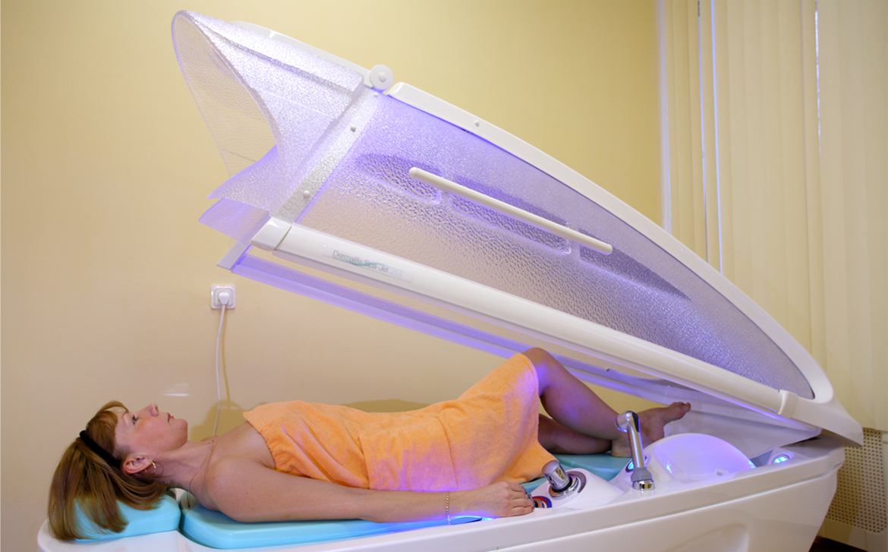

Многие гости интересуются, почему мы просим оформить санаторно-курортную карту (СКК) перед заездом в санаторий. Вопрос действительно актуален: далеко не все любят обращаться к участковому врачу и на посещение поликлиники не всегда есть время. К тому же, с первого взгляда такая карта может показаться простой формальностью. Но спешим вас уверить, что это не так.
Оформление санаторно-курортной карты перед лечением в санатории необходимо по двум причинам:
Знакомство с вашей историей болезни
Для составления эффективной программы лечения врачу санатория необходимо знать историю болезни пациента, его основное и сопутствующее заболевание. Всё это он сможет найти в вашей санаторно-курортной карте и сразу начать лечение, не тратя несколько дней на полное обследование и диагностику.
Выявление противопоказаний
Каждый человек — индивидуален. Каждый организм, например, по-разному воспринимает низкие и высокие температуры. Санаторно-курортная карта помогает нам понять, какие процедуры вам противопоказаны, и обеспечить эффективное и, что не менее важно, безопасное лечение.
На сайте http://gorzdrav.spb.ru/ можно легко и быстро записаться к врачу в почти любую районную поликлинику. Получив через Интернет талончик на определенную дату и время, вы не потратите много времени на ожидание в очереди.
Не откладывайте бронирование номера и оформление санаторно-курортной карты на последний день. Возможно, для получения СКК вам придётся сдать несколько анализов, поэтому начать оформление нужно как минимум за неделю до заезда в санаторий.